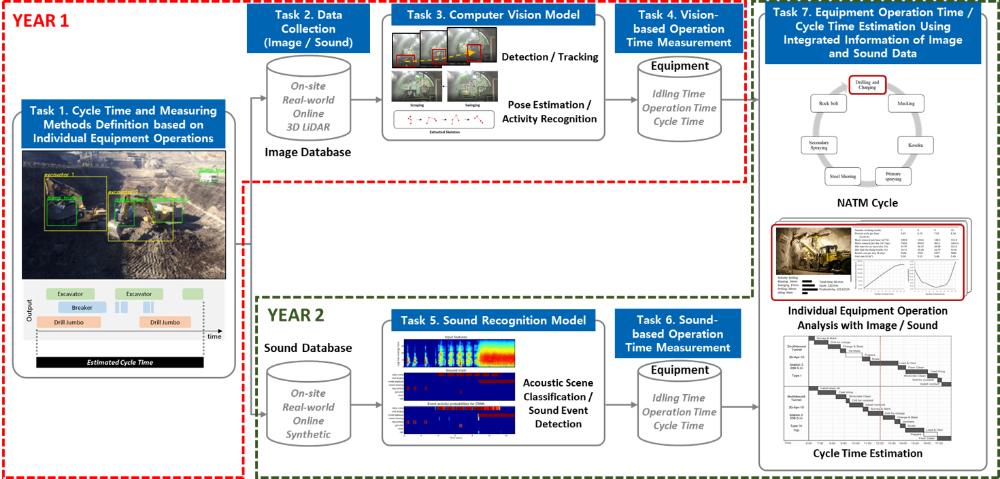

Hello, I'm deeply interested in the application of deep learning in construction automation.
I am currently researching methods to bridge the gap between laboratory and real sites through data generation and domain adaptation.
I have a keen interest in various research utilizing deep learning. I am studying diversely!
I have addressed the performance degradation problem that occurs when the target worker is not included in the source worker, a limitation of conventional construction HAR research, through a variational autoencoder. I am challenging to develop a general model that can actually be applied to construction sites.
I have collected datasets and developed models to detect heavy objects, a serious hazard factor on construction sites. In the future, I will challenge to develop a general model using data generation technologies like stable diffusion.
Although future construction will be robot-based, collaboration with humans is inevitable before full automation. I am interested in HAR research through robot vision in situations of collaboration with humans by applying the technology I have to robots.
I participated in research to develop a model that infers possible accident types based on work plans. I think that fine-tuning chat GPT appropriately will also have various applications in the construction field in the future.
Mar. 2021 – Feb. 2023, Seoul National University (SNUCEM)
Mar. 2010 – Feb. 2017, Kyung Hee University
(Under Review) Park, S., Lee, H., Park, M., Ahn, C. R. (2023) Human-Independent Activity Recognition in Construction based on Variational Autoencoder and Wearable Motion Sensors
(Under Review) Jung, G., Jung, M., Park, S., Park, M., Ahn, C. R. (2023). Contextual Multimodal Approach for Recognizing the Concurrent Activities of Equipment Vehicles in Tunnel Construction Projects
(Under Review) bh
Lee, H., Lee, G., Park, S., Lee, S., Jacobs, J. V., & Ahn, C. R. (2023). Collective Sensing of Workers’ Loss of Body Balance for Slip, Trip, and Fall Hazard Identification: Field Validation Study. Journal of Computing in Civil Engineering, 37(1), 04022052.link
Park, S., Lee, H., Ahn, C. R., Park, M. (2023). Human-independent activity recognition of construction worker. In EC3 Conference 2023 (Vol. 4, pp. 0-0). European Council on Computing in Construction.link
Kim, J., Yoon, I., Jung, M., Joo, S., Park, S., Hong, Y., Cho, J., Park, M. (2022). Establishment of Measurement Standards for Productivity Assessment in Construction Project. Korean Journal of Construction Engineering and Management, 23(3), 3-12.
2022.06~2023.12
Sponsor: Seoul National University
This research explores the application of artificial intelligence and robotics technology to enhance the low level of automation and digitalization in the construction industry. Although the construction industry is a complex and uncertain environment, artificial intelligence and robotics can flexibly respond in such environments, contributing to the improvement of productivity and safety on construction sites. This research center aims to establish a multidisciplinary research collaboration system and build a leading position in smart construction AI research both domestically and internationally, focusing on three major research topics. 1. **Construction Automation Technology Using Construction Robots**: Developing autonomous driving technology for robots and a worker-robot interface based on augmented reality to adapt to the dynamic environment of construction sites. 2. **Digital Twin and AI-based Smart Construction Business Management Technology**: Conducting research on on-site environmental information sensing, Multi-Camera monitoring, and the ethical use of AI in construction bidding. 3. **AI-based Worker Safety Management Technology**: Developing a low-cost non-verbal risk perception ability assessment system for construction workers and AI technology for automatic recognition of risk factors in industrial sites based on CCTV footage. This research is conducted from a global perspective through collaboration with experts from various fields, optimizing and improving the overall process of construction projects.
2021.05~2023.03
Sponsor: Obayashi Corporation

NATM is a tunnel construction method to use the ground itself as major load supports and is composed of repeated cycles of various construction works such as drilling, blasting, mucking, scaling, shotcrete, and rock-bolting. For NATM-based tunnel construction management, it is crucial to collect cycle-time. Tunnel construction works can be delayed due to various factors, such as failure and delay of equipment and lack of material supply; these delays have a significant impact on the profitability of the construction project by increasing the total construction duration and cost. The data collection regarding work time can help quantitatively identify the primary causes, frequency, and impact of construction delays, making it possible to manage schedule risk and shorten project duration. In collecting construction cycle type data, artificial intelligent (AI)-based data collection technologies can show considerable benefits. Analyzing the cause of delay requires a large amount of real-time data over a long period, which requires a lot of labor and cost. However, in the harsh environment inside the tunnel, where multiple construction machines work in a narrow space, it is difficult for people to observe construction works for a long period. AI technologies based on deep learning enable computers to understand objects, situations, and environments and extract information from visual and acoustic information, as human cognitive systems do. Therefore, it is possible to measure a large amount of data on the tunnel construction cycle time using AI-based automated measurement technologies. The final objective of the research project is to develop an artificial neural network-based NATM cycle-time data collection method, which can be achieved by performing the following goals.
2021.02~2022.12
Sponsor: Samsung Electronics Corporation
In order to solve the problem of productivity decline in semiconductor construction, this study analyzes productivity degradation factors and influences through actual data and develops a work plan optimization model. The research objectives of this study are as follows. 1) Establishment and management of measurement processes by construction type 2) Establishment of a model for calculating the impact of productivity degradation factors 3) Development of a work plan optimization model. In the measurement step, a measurement process is established to calculate productivity hindrance factors, measurement sheets are collected, and management programs are established. In the analysis step, a model for calculating productivity degradation factors based on methodology was established, and the analysis of construction management status was automated based on the collected data. In the improvement step, construction plan and feasibility verification technology are secured, and work plan is optimized by improving resource efficiency.